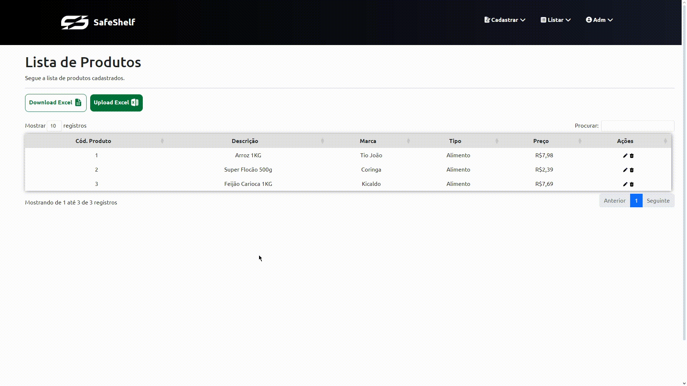
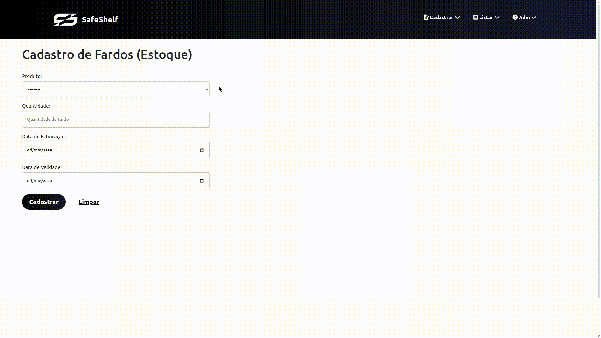

O SafeShelf foi sem dúvidas um dos meus maiores, se não meu maior projeto, seu propósito é auxiliar o público-alvo(pequenos e médios comerciantes) a terem um melhor controle e monitoramento do vencimento dos seus próprios produtos.
O SafeShelf trabalha numa relação de Produto - Fardos, em que você cadastra um único produto do seu estabelecimento e em seguida cadastra os fardos desse produto, podendo ter vários, por exemplo um pode vencer amanhã, outro próxima semana, outro próximo mês e assim sucessivamente...

Nosso diferencial é o sistema de alerta de vencimento, podendo estar de duas formas...
1. Assim que feito o login, na página inicial vai estar uma tabela dos fardos dos seus respectivos produtos
mais próximos de vencer. Estando os "Vencidos" em prioridade, seguido das condições "Próximo de Vencer" e "Útil" no final.
2. E-mails Diários: Diariamente chegarão na sua caixa de e-mails avisos dos fardos de produtos que estão próximos de vencer
e não só eles, mas também os que já estão vencidos, o prazo estabelecido para a condição "Próximo de Vencer" é de 14 dias.
E claro, que não poderia faltar a versão mobile da nossa ferramenta. Muitos dos comerciantes locais podem não ter um notebook ou um computador para trabalho no seu estabelecido, então incluímos responsividade para que fique funcional e dinâmico para o público que utiliza de desktops e de smartphones.


Apresentamos o SafeShelf no Projeto Integrador do curso de Aprendizagem Profissional De Qualificação Em